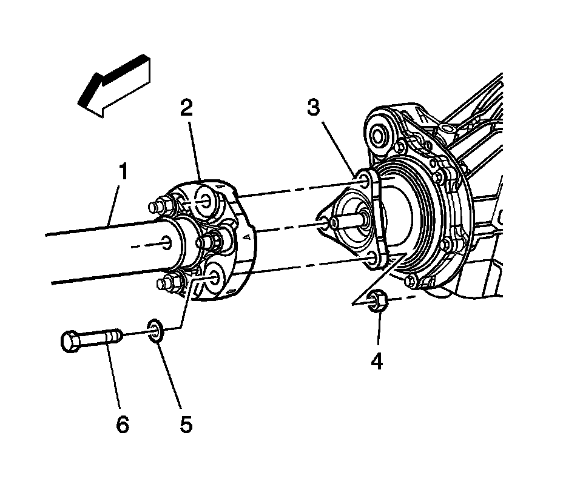
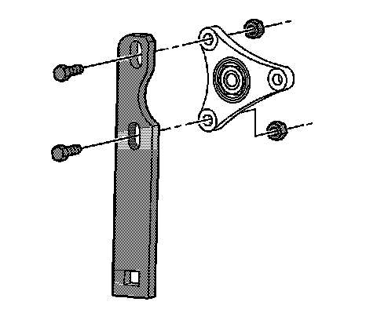
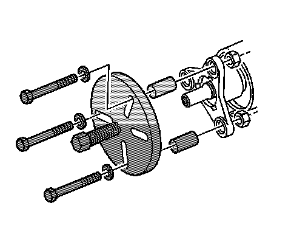
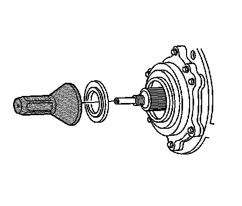

Drive Pinion Flange/Yoke and/or Oil Seal Replacement (V6 Engine)
Drive Pinion Flange/Yoke and/or Oil Seal Replacement (V6 Engine)
Tools Required
* J 45005 Seal Installer
* J 45012 Holding Fixture
* J 45019 Flange and Pinion Cage Remover
* J 34826 Hub Nut Socket (36 mm)
Removal Procedure
1. Raise and support vehicle. Refer to Lifting and Jacking the Vehicle (Service and Repair) .
2. If vehicle is equipped with dual exhaust, remove the exhaust system. Refer to Exhaust System Replacement (Service and Repair) .

Important: Remove only the propeller shaft coupler-to-differential flange bolts. Do NOT remove the coupler from the propeller shaft.
3. Remove the propeller shaft. Refer to Rear Propeller Shaft Replacement (RWD) (Rear Propeller Shaft Replacement (RWD)) .

4. Install the J 45012 to the flange.
5. While holding the J 45012 , remove the drive pinion nut, using J 34826 .
6. Remove the J 45012 .

7. Install the J 45019 to the flange.
8. Using the J 45019 , remove the flange.
9. Using a flat-bladed tool, remove the drive pinion seal. Take care not to damage any sealing surfaces.
Installation Procedure
Important: Ensure the pinion bore is free of excess gear oil. Excessive fluid can get trapped behind the new seal's dust shield. The trapped gear oil can get squeezed out when installing the pinion flange and give the illusion of a continued leak.
1. Lubricate the drive pinion flange sealing surface of the drive pinion seal with synthetic gear oil GM P/N 12378514 (Canadian P/N 88901045) or equivalent.
2. Install the drive pinion seal to the J 45005 .

3. Using the J 45005 , install the pinion seal to the differential.
4. Remove the J 45005 .
5. Remove the J 45019 .
6. Install the J 45012 .
7. Install the pinion flange to the drive pinion shaft.
Important: The pinion shaft threads and the pinion flange nut must be free of residue and debris prior to application of threadlocker in order to ensure proper adhesion and fastener retention.
8. Prepare the pinion shaft threads and the pinion flange nut for assembly:
1. Thoroughly clean the residue from the pinion shaft threads by using denatured alcohol or equivalent and allow to dry.
2. Thoroughly clean the residue from the pinion flange nut by using denatured alcohol or equivalent and allow to dry.
9. Apply threadlocker GM P/N 12345382 (Canadian P/N 10953489), or equivalent to 2/3 of the threaded length of the pinion shaft threads. Ensure that there are no gaps in the threadlocker along the length of the filled area of the pinion shaft threads.
10. Allow the threadlocker to cure approximately 10 minutes before installation.
Notice: Refer to Fastener Notice (Fastener Notice) .
11. Install the drive pinion flange nut to the pinion shaft. While holding the J 45012 , use J 34826 to tighten the drive pinion nut.
Tighten the pinion flange nut to 285 N.m (210 lb ft).
12. Remove the J 45012 .
13. Install the propeller shaft. Refer to Rear Propeller Shaft Replacement (RWD) (Rear Propeller Shaft Replacement (RWD)) .
14. Inspect the fluid level. Refer to Rear Axle Lubricant Level Inspection (Rear Drive Axle) .
15. If vehicle is equipped with dual exhaust, install the exhaust system. Refer to Exhaust System Replacement (Service and Repair) .
16. Lower the vehicle.